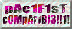

With...
Double click on "FAKE.PRG". This demo works on all Hasbro compooterz!!! So even Optimus Prime will be able to run this lovely demo!!! Which is funny, because our code is OPTIMISED PRIME!!!!! Ha ha ha ha, are we wacky or wot?
What the feck (!!!) is the ULTIMATE FAKE DEMO all about!?!?!?!?!??!
This demo was done in a little bit of spare time before finishing Monomental! We did it one night after reading yet another bloody thingy saying were a "fake demo crew". Even worse, they said we did "fake demos"!!!!!!!!!! We were a little annoyed before, and this was the drinking straw that broke the lama's back! (Don't tell Jeff Minter!)
Flippin' feckin' nora!! Do these peeps knows what a fake demo really is???!?!?
Well, we did this little demo to show them what a REAL fake demo is!!!
Just run it and see!!!
{% endcapture %} {% include demo_content.html %}